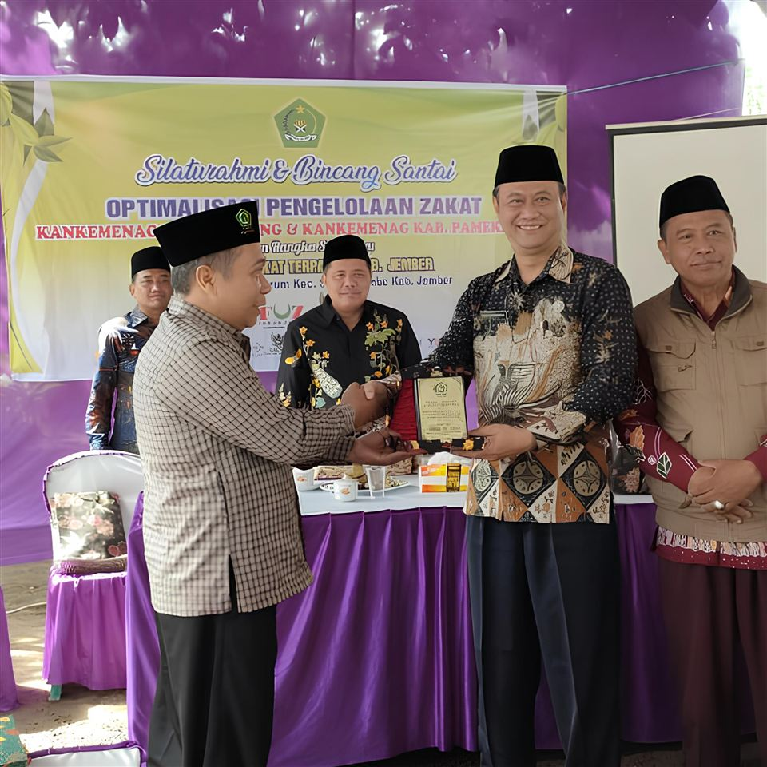
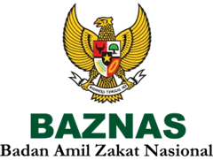
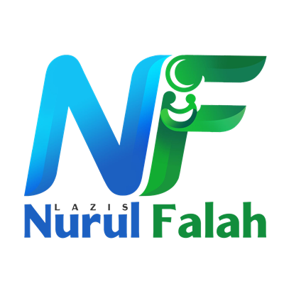
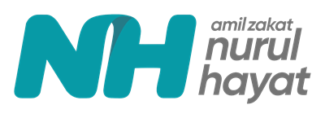
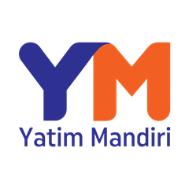
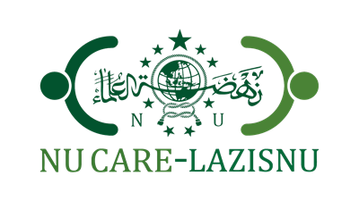
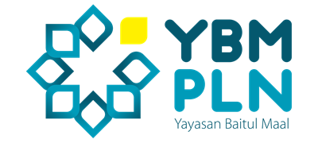
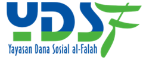

Zakat yang kembali ke kampung.
KAMZA mengelola zakat, infak, dan sedekah warga Dusun Paceh menjadi pendidikan, usaha keluarga, dan layanan sosial yang tepat sasaran — dikelola bersama, dinikmati bersama.

Profil
Gerakan zakat terpadu di Dusun Paceh
KAMZA adalah ruang kolaborasi warga, pemerintah, dan lembaga zakat — menghadirkan program yang menyentuh kebutuhan dasar sekaligus mendorong kemandirian.
Kampung Zakat Terpadu (KAMZA) adalah program binaan resmi Kantor Kementerian Agama Kabupaten Jember, ditetapkan pada 15 Maret 2018 dan diresmikan langsung oleh Kakanwil Kemenag Provinsi Jawa Timur pada 31 Maret 2018.
Di bawah arahan Bapak Amiruddin, S.Pd. selaku Sekretaris Direktur/Direktur, KAMZA menggerakkan dana zakat, infak, dan sedekah secara produktif untuk meningkatkan kualitas ekonomi, pendidikan, dan kesehatan masyarakat Dusun Paceh dan sekitarnya.
Bantuan tidak berhenti sebagai santunan. Setiap program dirancang agar keluarga penerima manfaat naik kelas — dari butuh, menjadi mampu, lalu ikut berbagi.
- Lokasi
- Dusun Paceh, Desa Jambearum, Sumberjambe, Jember
- Ditetapkan
- 15 Maret 2018
- Diresmikan
- 31 Maret 2018
- Pengelola
- Amiruddin, S.Pd. beserta tokoh masyarakat
- Fokus
- Pendidikan, ekonomi, sosial, dan kesehatan
Program
Tiga pilar menuju keluarga yang mandiri
Program dijalankan bersama warga dan mitra LAZ agar manfaatnya terasa langsung di rumah-rumah warga.
-
Pendidikan & keagamaan
Pengentasan buta aksara Al-Qur’an melalui TPA Darul Qur’an Ibrahimy, Rumah Baca Qur’an untuk lansia, beasiswa anak yatim, dan bantuan guru ngaji.
Literasi Qurani -
Pemberdayaan ekonomi
Pelatihan kemandirian seperti pembuatan paving dan anyaman bambu, bantuan modal usaha, serta hewan ternak untuk menaikkan taraf hidup keluarga binaan.
Ekonomi produktif -
Sosial & kesehatan
Bedah rumah tidak layak huni, santunan janda dan duafa, paket sembako, sunatan massal, akses air bersih, hingga pengobatan gratis.
Layanan warga
Sinergi
Dikuatkan oleh jaringan lembaga zakat dan mitra sosial
Keberhasilan KAMZA dibangun di atas gotong royong Unit Pengumpul Zakat dan Lembaga Amil Zakat yang bergerak bersama untuk kemaslahatan warga.

BAZNAS Jember
Lazis Nurul Falah
Lazis Nurul Hayat
Yatim Mandiri
NU Care LAZISNU
YBM Yayasan Baitul Maal
YDSFKontribusi
Tiga langkah menyalurkan zakat, infak, dan sedekah
Baik dari muzakki perorangan maupun lembaga — semua disambut dan diarahkan ke program yang paling dibutuhkan warga.
-
Hubungi pengelola
Sapa pengelola KAMZA lewat WhatsApp untuk bertanya tentang program yang sedang berjalan.
-
Tentukan bentuk dukungan
Pilih salurannya: zakat, infak, sedekah, atau kolaborasi program bersama lembaga mitra.
-
Salurkan dan lihat dampaknya
Dana tersalur ke pendidikan, usaha keluarga, dan layanan sosial di Dusun Paceh dan sekitarnya.
Tanya jawab
Pertanyaan yang sering masuk
Apa itu KAMZA?
Kampung Zakat Terpadu (KAMZA) Dusun Paceh adalah program binaan Kantor Kementerian Agama Kabupaten Jember yang ditetapkan 15 Maret 2018 dan diresmikan 31 Maret 2018 oleh Kakanwil Kemenag Provinsi Jawa Timur.
Siapa yang mengelolanya?
Pengelolaan berada di bawah arahan Bapak Amiruddin, S.Pd. selaku Sekretaris Direktur/Direktur, bersama tokoh masyarakat dan jejaring lembaga zakat mitra.
Di mana lokasinya?
Dusun Paceh, Desa Jambearum, Kecamatan Sumberjambe, Kabupaten Jember, Jawa Timur. Titik lokasinya bisa dibuka lewat tautan peta di bagian bawah halaman ini.
Bagaimana cara menyalurkan zakat, infak, atau sedekah?
Hubungi pengelola melalui WhatsApp. Anda akan diarahkan ke program yang sedang berjalan atau ke lembaga zakat mitra, sesuai niat dan jenis dana Anda.
Bisakah berkunjung atau mengajukan kolaborasi program?
Bisa. KAMZA terbuka untuk kunjungan lokasi dan kolaborasi program bersama LAZ, UPZ, maupun lembaga sosial lain. Ajukan lewat WhatsApp atau Instagram pengelola.
Mari bersinergi membangun Dusun Paceh yang lebih mandiri.
Hubungi pengelola KAMZA untuk informasi program, kunjungan lokasi, atau peluang kolaborasi bersama lembaga zakat dan mitra sosial.